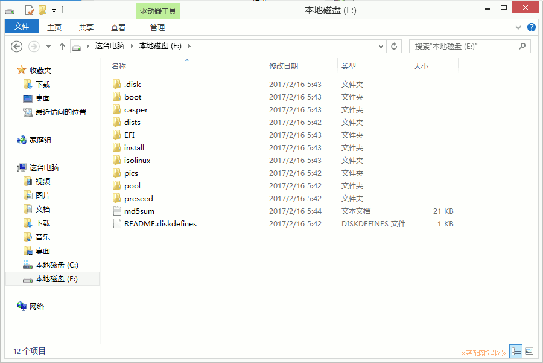
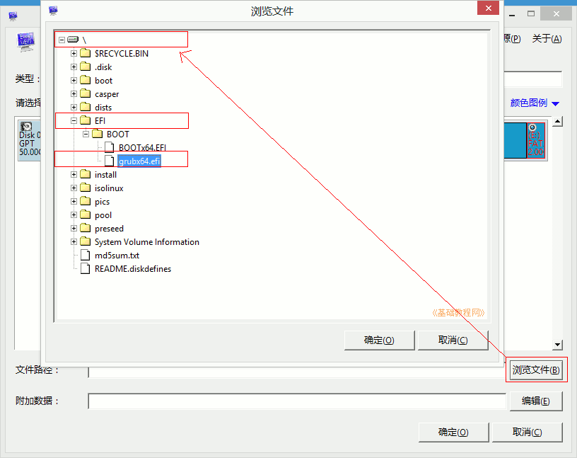
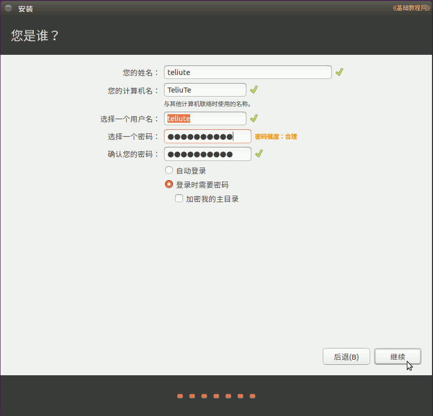

Ubuntu安装基础教程
作者：TeliuTe 来源：基础教程网
用 EasyUEFI 在 Win8/10 中硬盘安装 Ubuntu 返回目录 下一课EasyUEFI 可以方便地编辑 Win8 和Win10 的启动菜单项，操作中注意细心，下面来看一个练习；
1、准备Ubuntu安装文件
1）下载带amd的64位 Ubuntu 桌面版光盘镜像文件，如 ubuntu-16.04.2-desktop-amd64.iso：http://releases.ubuntu.com/16.04/
其他下载地址可以参阅前面的课程；
2）分出一个5G左右的分区，格式化为FAT32，将下载的光盘镜像解压到里面；

3）再分出40G空间，作为安装Ubuntu系统的空间，不用格式化，记住分区大小和位置；
4）Win8/10要关闭快速启动、关闭安全启动，参考第2条安装常见问题：UEFI启动模式安装ubuntu指南
2、安装 EasyUEFI，添加启动项
1）EasyUEFI个人版是免费的，可以在官网或友链下载： http://www.easyuefi.com/index-cn.html，下载完后双击运行安装，
2）在出来的安装对话框中，一路点“继续、确定、完成”，一般默认选中了简体中文；
安装完自动运行，或双击桌面上图标运行，进入主窗口，再点“管理EFI启动项”
3）在出来程序窗口中间栏，点击第二个绿色加号图标的“添加新项目”；
4）在出来的面板上边类型里选择Linux，右边文本框里输入名称“Ubuntu”，然后在中间的分区图表中，选中后边的FAT32分区，上边有个圆点；
5）再点右下角的“浏览文件”按钮，在面板中依次点开加号，找到“\EFI\BOOT\grubx64.efi”，点“确定”；

6）点“确定”返回主窗口，在左边的启动列表里，选中“Ubuntu”，点中间第一个绿色向上箭头，调到第一位，点击返回主窗口；
7）关闭所有窗口，重启计算机，可以按“win键+R”调出运行框，输入 shutdown.exe -f -r -t 0
1）重新启动后，出现Ubuntu安装菜单，按回车键进入第一个试用Ubuntu（*Try Ubuntu without installing）；
3）等一会就进入一个桌面，这就是试用的 live cd 桌面，桌面左上边有有两个图标，右上角是“关机”按钮；
4）对于硬盘安装，点一下左上角的圆圈按钮，稍等在旁边出来的文本框中输入字母 ter 然后点击下边出来的终端图标
5）输入命令 sudo umount -l /dev/sda 然后按一下Tab键，补上数字后，按回车键执行，没什么提示就是成功了，关闭终端；
6）双击桌面上的“安装Ubuntu16.04 LTS”图标，稍等出来一个“欢迎”面板，在左侧栏选中“中文(简体)”，点继续；
2）第2步是检查准备情况，要求磁盘空间足够，最好连上网络，一般不勾选更新和第三方软件，点“继续”按钮；
3）接下来第3步是询问安装到哪个分区，选择最下边的“其他选项”，点“继续”按钮；
4）接下来出来磁盘分区情况，如果要新建分区和转换分区可以参考前面的第7、13、15、16、19课，这儿是安装到之前准备的空闲分区；
5）点击选中计划要安装的分区，可以根据分区类型和大小来确定，然后点下边的“+/- 更改”按钮；
6）在出来的对话框中，设定用于分区的格式Ext4，在“挂载点”右边点一下，选 “/”，点“确定”
注意，格式化会删除这个分区上的所有文件；
7）点“确定”出来提示点继续，回到分区面板，检查一下分区编辑好了，下边是安装grub引导器不用修改；
8）检查无误后，点“现在安装”，如果提示没有交换空间，点“继续”，这个是用于休眠的，大小跟内存相同的分区，内存大于2G了可以不用它；
9）然后出来询问地区，点“继续”即可，修改地区可能会产生时差问题，这时已经开始安装了；

10）接下来是键盘布局，一般是“汉语”，直接点“前进”继续；

11）接下来是设定自己的用户名(小写字母)和密码等，从上到下依次输入即可，然后点“继续”；

12）然后接着继续安装过程，可以看一下系统的介绍；
13）耐心等待完成，然后出来一个对话框，点“现在重启”完成安装，按电源键也可以呼出关机对话框；

4、grub2引导双系统
1）重启后如果显示Ubuntu启动菜单，则表明安装顺利完成，可以按方向键选择进入第一个Ubuntu或第三个Windows；

2）如果没有显示启动菜单直接进入Windows，则运行EasyUEFI，点加号、选择Linux、输入名称，选择前面的100M esp分区，浏览文件找到\EFI\ubuntu\grubx64.efi；
3）将添加的“Ubuntu”启动项调至第一位；
4）Ubuntu 系统的连网、换源、更新，请参考第3条： http://teliute.org/linux/Ubsetup/lesson24/lesson24.html
本节学习了 Win8/10 efi 硬盘安装 ubuntu 的基本方法，如果你成功地完成了练习，请继续学习下一课内容；
本教程由86团学校TeliuTe制作|著作权所有
基础教程网：http://teliute.org/
美丽的校园……
转载和引用本站内容，请保留作者和本站链接。